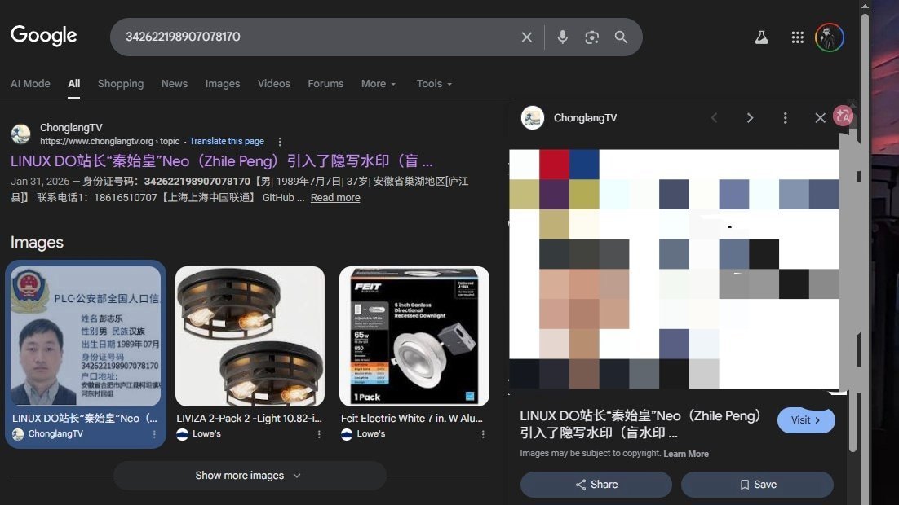
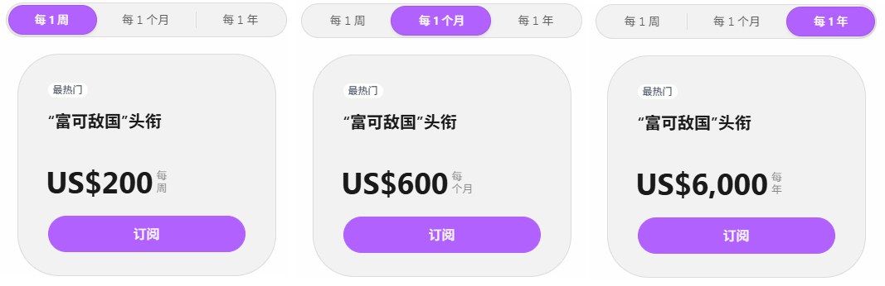
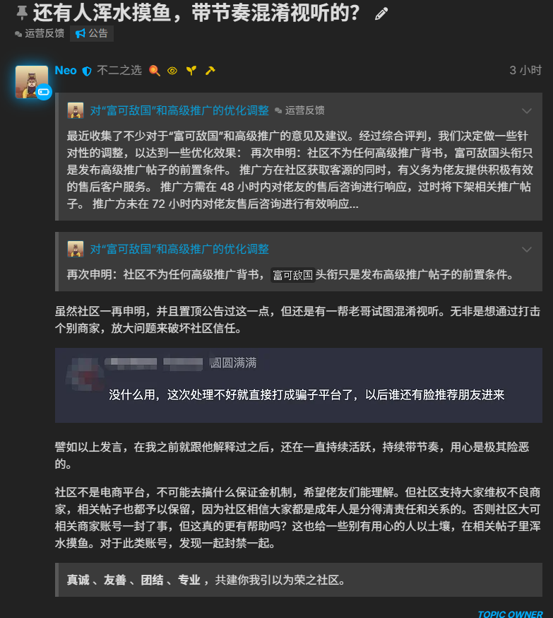

知名粉红技术论坛LINUX DO站长彭志乐（化名）疑似被“开盒”，佬友可通过订阅600刀每月的「富可敌国」头衔进行付费推广，头衔失效后将自动清除所有推广帖。
此前该论坛「富可敌国」API中转站PrivNode以10元抛售66万元债务并跑路，但站方只一味地撇清关系，收了钱缺不认可“背书”，并指责部分用户“混水摸鱼、混淆视听”，并以“通过打击个别商家，放大问题来破坏社区信任”对这些用户进行封号。
你买的不是广告位，而是发布「高级推广帖子」的前置条件。不过网上也有对该论坛加水印、收集浏览器指纹等行为的应对措施，还有对L站的管理人员所作所为的记录：https://t.co/H7rTXNL5zG


此前该论坛「富可敌国」API中转站PrivNode以10元抛售66万元债务并跑路，但站方只一味地撇清关系，收了钱缺不认可“背书”，并指责部分用户“混水摸鱼、混淆视听”，并以“通过打击个别商家，放大问题来破坏社区信任”对这些用户进行封号。
你买的不是广告位，而是发布「高级推广帖子」的前置条件。不过网上也有对该论坛加水印、收集浏览器指纹等行为的应对措施，还有对L站的管理人员所作所为的记录：https://t.co/H7rTXNL5zG



据奶昔论坛上的佬友提到，知名粉红技术论坛LINUX DO站长“秦始皇”Neo（Zhile Peng）引入了隐写水印（盲水印），一旦讨论此事就秒删帖。
只要在LINUX DO登录账号，并调节成深色模式即可展现背景满屏斜着的 @自己用户名 的水印（默认白色背景只是对比度太低，肉眼上看得并不是很明显）。 https://t.co/wvUaFUNLrT
只要在LINUX DO登录账号，并调节成深色模式即可展现背景满屏斜着的 @自己用户名 的水印（默认白色背景只是对比度太低，肉眼上看得并不是很明显）。 https://t.co/wvUaFUNLrT